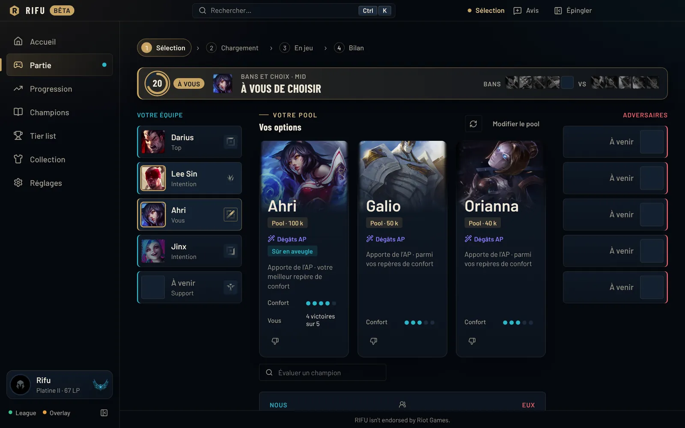
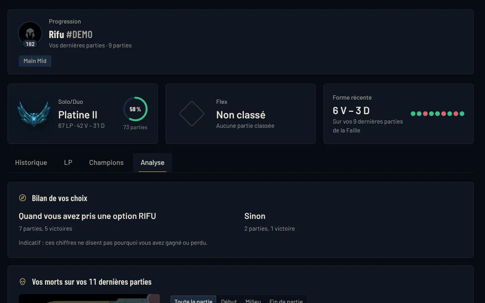

Toute votre partie, de la sélection au bilan.
RIFU est un compagnon gratuit pour League of Legends. Des conseils de draft pris dans votre pool, les dix joueurs au chargement, des overlays légers en jeu et un bilan noté sur 100 après chaque partie.


1 · Sélection des champions
Ce qui manque à votre équipe, et qui le comble dans votre pool.
RIFU lit la draft en direct, repère les manques de votre compo sur six axes (frontline, engage, peel, dégâts, contrôle, timing) et vous propose trois options de votre pool, chacune avec sa raison.
- Trois options pour votre rôle : ce qu'elles apportent, le matchup, votre confort
- Cherchez n'importe quel champion pour le comparer aux options
- Les deux compos comparées, axe par axe, et des bans à envisager
- Au verrouillage : runes, sorts, ordre des compétences et set d'objets importés en un clic
- Alerte « partie trouvée », et acceptation automatique si vous l'activez

2 · Écran de chargement
Les dix joueurs, avant même d'entrer sur la Faille.
Un écran plein par-dessus le chargement de League, qui disparaît tout seul au début de la partie. Espace pour revoir l'écran du jeu.
- Rang, LP, forme récente et maîtrise de chaque joueur
- Résultats sur le champion joué, parties des dernières 12 h et 30 jours
- Duos et trios repérés, tags « en forme », « one-trick », série de victoires…
- Diagnostic des deux compos et votre note de matchup rappelée

3 · En partie
Des overlays légers, qui ne prennent jamais la main.
Un HUD déplaçable, un panneau à la demande et les écarts d'équipement au TAB. Rien qui ne soit pas déjà visible dans le jeu ou dans les API officielles.
- CS/min face à votre adversaire de lane, KDA, participation, vision
- Prochain achat, adapté à la compo adverse sans affaiblir votre champion
- Compétence à monter et rappel de balise
- Minuteurs des objectifs, buffs Nashor et Ancestral de votre équipe
- Ctrl + X : les dix joueurs, votre build et les réglages
- TAB maintenu : écart d'équipement ligne par ligne

4 · Après la partie
Une note sur 100, et ce qui l'explique.
Le bilan s'ouvre à la fin de la partie. Chaque mesure est comparée au meilleur des dix joueurs, avec des poids propres à votre rôle : un support est jugé sur sa vision et sa participation, pas sur ses sbires.
- Note de la partie, MVP et ACE, et la note des dix joueurs
- Écart d'or et d'XP minute par minute, avec éliminations et objectifs
- CS et or à 10 et 15 minutes face à votre adversaire, vos morts sur la carte
- LP gagnés ou perdus, comparaison à vos moyennes
- Une note de matchup pour la prochaine fois, une image à partager

Entre deux parties
Votre progression, partie après partie.
RIFU garde votre historique sur votre PC, y compris les parties jouées quand il était fermé.
- Courbe des LP, forme récente, champions et rôles des 30 derniers jours
- Un objectif du moment, choisi par vous parmi des propositions tirées de vos parties
- Bilan de vos choix : vos résultats avec ou sans une option RIFU
- Carte de vos morts sur les dernières parties
- Ce que le nouveau patch change pour vos champions

Quand vous voulez
Tier list, champions et profils.
Des statistiques calculées par RIFU à partir de parties classées EUW Émeraude et plus.
- Tier list S+ à D par rôle, avec victoires, choix et bannissements
- Build, runes, compétences et matchups de chaque champion
- Simulateur de draft et labo de pool, pour voir ce que votre pool ne couvre pas
- Profil de n'importe quel joueur EUW

Nos règles
Vous aider à jouer, jamais jouer à votre place.
API officielles uniquement
RIFU ne lit jamais la mémoire du jeu et ne modifie aucun fichier de League.
Toujours plusieurs options
Jamais « jouez X ». Les suggestions viennent de votre pool, pas d'une méta unique.
Pas d'avantage caché
Aucune estimation de MMR, aucun joueur masqué identifié, aucun suivi des sorts adverses.
Vos données chez vous
Historique, notes et réglages restent sur votre PC. Retours et statistiques d'usage : seulement si vous l'activez.
Installer
Prêt en deux minutes.
- Téléchargez l'installeurLe fichier
RIFU-Setup-….exe, sur cette page ou sur la page des versions. - Passez l'avertissement de WindowsPendant la bêta, l'application n'est pas encore signée. Cliquez sur « Informations complémentaires », puis « Exécuter quand même ». RIFU s'installe sans droits administrateur.
- Entrez votre code bêtaDemandez-le sur le Discord RIFU. Il est personnel : ne le partagez pas.
- Lancez LeagueRIFU détecte votre compte. Choisissez vos champions par rôle, ou gardez le pool automatique tiré de votre maîtrise.
- Passez en fenêtré sans bordurePour les overlays en jeu : Options › Vidéo › Mode d'affichage.
Configuration
- Windows 10 ou 11, 64 bits
- League of Legends, serveur EUW
- Environ 100 Mo à télécharger
- Mises à jour automatiques
Raccourcis
- Ctrl + X : panneau en partie
- TAB maintenu : écarts d'équipement
- Espace au chargement : voir l'écran de League
- Ctrl + K : aller à un écran
Questions
Questions fréquentes
RIFU est-il gratuit ?
Oui, entièrement. À terme, RIFU sera financé par de la publicité discrète, uniquement dans la fenêtre RIFU et hors partie : jamais en sélection, au chargement, en jeu ni dans un overlay.
Est-ce que je risque quelque chose avec mon compte ?
RIFU n'utilise que les interfaces que Riot met à disposition des applications tierces : l'API Riot, l'API du client League et les données de la partie en cours. Il ne lit jamais la mémoire du jeu, ne modifie aucun fichier de League et ne joue jamais à votre place.
Il suit les règles de Riot pour les applications tierces : plusieurs options plutôt qu'un choix imposé, pas d'estimation de MMR, pas d'identification des joueurs masqués en sélection, pas d'information absente du client qui donnerait un avantage.
Comment obtenir un code bêta ?
La bêta est fermée et se fait sur invitation, avec un code personnel par joueur. Rejoignez le Discord RIFU pour demander une place.
Comment est calculée la note sur 100 ?
Chaque mesure de la partie (éliminations, participation, dégâts, or, sbires, vision, objectifs) est rapportée au meilleur des dix joueurs, puis pondérée selon votre rôle. Le meilleur de l'équipe gagnante est MVP, celui de l'équipe perdante est ACE. Ce n'est ni un rang ni une estimation de MMR.
Les overlays gênent-ils le jeu ?
Non. Ils ne prennent jamais le focus du jeu, et vous les ouvrez ou les masquez à la demande. Pendant la bêta, ils demandent le mode fenêtré sans bordure ; le plein écran viendra avec la version signée.
Pourquoi Windows affiche-t-il un avertissement ?
Pendant la bêta, l'installeur n'est pas encore signé par un certificat, donc Windows SmartScreen le signale. La signature est prévue pour la sortie publique. En attendant, téléchargez RIFU uniquement depuis ce site ou la page officielle des versions.
Faut-il installer Overwolf ?
Non. RIFU est une application autonome : elle n'a pas besoin du client Overwolf.
Quels modes de jeu sont pris en charge ?
La Faille de l'invocateur : normales, classées, Coop contre IA et parties personnalisées. En ARAM et en Arena, RIFU ne donne pas de conseil de draft pour l'instant.
Quels serveurs ? Et sur Mac ?
EUW pour l'instant : les profils, le chargement et les statistiques s'appuient sur les parties de ce serveur. RIFU est réservé à Windows 10 et 11.
Comment se font les mises à jour ?
RIFU télécharge les nouvelles versions en arrière-plan, jamais pendant une partie. Quand « Redémarrer pour mettre à jour » apparaît, cliquez dessus entre deux parties.
Quelles données sont envoyées ?
Le minimum pour afficher les profils et l'écran de chargement. Tout le reste reste sur votre PC, et les retours ne partent que si vous l'activez. Le détail est dans la politique de confidentialité.
Votre prochaine partie commence ici.
Gratuit, pour Windows. Un code bêta est nécessaire pendant la bêta fermée.